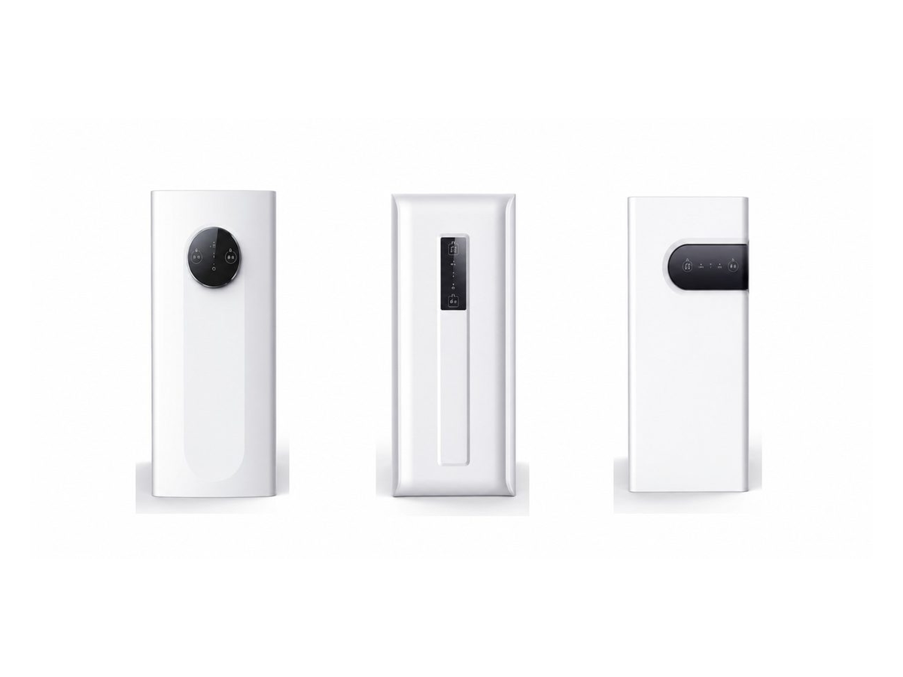

Sob a piaRP-U07
Purificador RO sob a pia de 400–600 GPD
SKU: RP-U07
MOQ: confirmar ao consultar
Início/Produtos/Sistemas de RO sob a pia/ RP-U08

Sistemas de RO sob a pia
RO sob a pia com aquecimento por acumulação (M2209RN)
RP-U08 — RO sob a pia com aquecimento por acumulação. Especificação principal: capacidade RO 800 GPD. Uma segunda configuração cobre 400–800 GPD, com aquecimento por meio de uma opção de torneira de aquecimento instantâneo. As especificações são confirmadas por modelo e pedido.
Solicitar orçamento para RP-U08
A tensão / frequência é configurável para o país de destino. Outras configurações são confirmadas por pedido.
RP-U08 é um purificador RO sob a pia com água quente, em duas configurações. A configuração de aquecimento por acumulação opera a 800 GPD com um tanque de água quente de 2 L (1200 W, manutenção a 75 °C) e potência nominal de 2200 W. A segunda configuração cobre 400–800 GPD com fluxo de ≥1,05–2,0 L/min e aquecimento por meio de uma opção de torneira de aquecimento instantâneo (20 L/h), com eficiência hídrica de classe 1. Ambas as configurações ficam escondidas sob a pia e deixam a bancada livre.
Qual é a quantidade mínima de pedido?
O primeiro pedido é de 200 unidades por modelo, e os pedidos de reposição são de 500 unidades.
Posso pedir uma amostra antes de um pedido em volume?
Sim. As amostras ficam prontas em 15 dias, e a taxa da amostra é reembolsada no seu primeiro pedido em grande quantidade. Os pedidos em grande quantidade levam 40 dias após a aprovação da amostra e são enviados FOB Shenzhen.
Qual configuração devo escolher?
Cotar como RP-U08 e especificar a configuração: aquecimento por acumulação de 800 GPD (tanque de 2 L, 1200 W, manutenção a 75 °C) ou 400–800 GPD com a opção de torneira de aquecimento instantâneo (20 L/h, eficiência hídrica de classe 1).
Duas configurações — cotar como RP-U08 e especificar a configuração (aquecimento por acumulação de 800 GPD ou 400–800 GPD com opção de torneira de aquecimento instantâneo).
Passe o cursor sobre a imagem de uma variante para ver suas especificações. Em telas sensíveis ao toque, toque em uma imagem.

Especificações completas de cada variante, lado a lado. A tabela de especificações mais abaixo mostra os valores de aquecimento por acumulação de RP-U08.
| Especificação | RP-U08-1 — aquecimento por acumulação (M2209RN) | RP-U08-2 — 400–800 GPD (M2201RN) |
|---|---|---|
| Capacidade RO | 800 GPD | 400–800 GPD |
| Potência nominal | 2200 W | 72–96 W; 2200 W com opção de torneira com aquecimento instantâneo |
| Dimensões (C×L×A) | 345 × 220 × 385 mm | 220 × 220 × 395 mm |
| Volume nominal de água purificada | A confirmar por pedido | 4000 L |
| Fluxo de produção de água | A confirmar por pedido | ≥1.05–2.0 L/min (conforme a capacidade) |
| Filtração | Compósito PP/carvão + RO | Compósito PP/carvão + RO + pós-carvão (personalizável) |
| Aquecimento | Tanque de armazenamento 2 L, 1200 W, manutenção a 75 °C | Opção de torneira com aquecimento instantâneo, 20 L/h |
| Fluxo de água a 45 °C | ≥1.3 L/min | A confirmar por pedido |
| Classe de eficiência hídrica | A confirmar por pedido | Classe 1 |
| Tensão / frequência | Configurável para o país de destino | 220 V ~ 50 Hz, configurável para o país de destino |
9 linhas de especificações do catálogo da ROPureOEM.
| Capacidade RO | 800 GPD |
|---|---|
| Potência nominal | 2200 W |
| Dimensões (C×L×A) | 345 × 220 × 385 mm |
| Tanque de água quente | 2L |
| Potência de aquecimento do tanque | 1200 W |
| Temperatura de manutenção do tanque | 75°C |
| Fluxo de água a 45 °C | ≥1.3 L/min |
| Tensão / frequência | Configurável para o país de destino |
| Outras configurações | A confirmar por pedido |
As especificações são retiradas do catálogo ROPureOEM. Quando um valor ainda não está confirmado, ele é listado como “Confirmado por pedido” — não publicamos valores não confirmados.

Sob a piaPurificador RO sob a pia de 400–600 GPD
SKU: RP-U07
MOQ: confirmar ao consultar
 Sob a pia
Sob a piaPurificador RO de alta capacidade com acesso frontal
SKU: RP-U09
MOQ: confirmar ao consultar
 Sob a pia
Sob a piaPurificador RO de três cartuchos
SKU: RP-U11
MOQ: confirmar ao consultar
 Sob a pia
Sob a piaPurificador RO compacto de dois cartuchos
SKU: RP-U12
MOQ: confirmar ao consultar